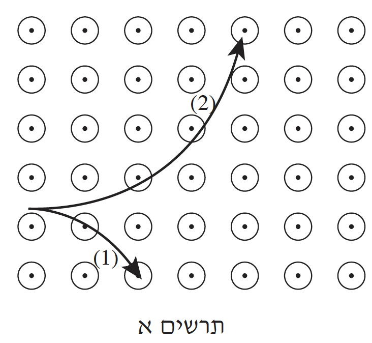
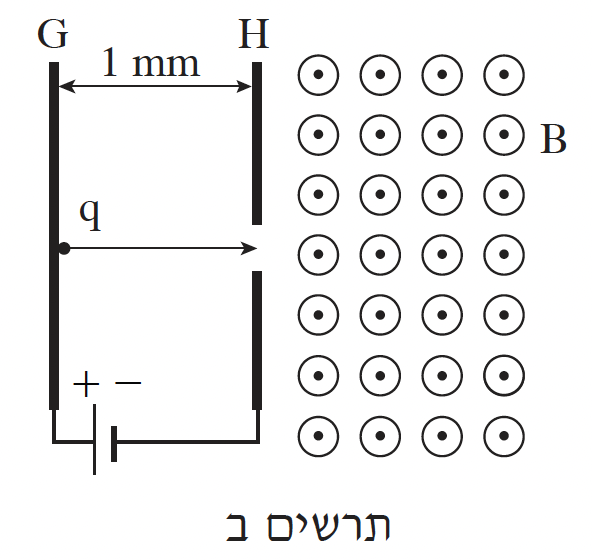

נתונים חלקיקים הטעונים במטען חשמלי. הניחו כי כוח הכובד הפועל על החלקיקים זניח.
לכל אחד משני המצבים המתוארים בסעיפים א-ב, קבעו אם הוא אפשרי או אינו אפשרי,
ונמקו כל אחת מקביעותיכם.
א.החלקיקים נעים באזור שבו שורר שדה מגנטי בלי שיפעל עליהם כוח מגנטי. (6 נקודות)
ב.החלקיקים נמצאים במנוחה באזור שבו שוררים גם שדה חשמלי וגם שדה מגנטי (כל אחד מן השדות קבוע), והכוח השקול הפועל עליהם שווה לאפס. (6 נקודות)
שני חלקיקים \((1)\) ו-\((2)\) נכנסים במאונך לשדה מגנטי אחיד. השדה המגנטי מאונך למישור הדף וכיוונו "אל הקורא". בתרשים א מוצגים חלקים מהמסלולים של החלקיקים בשדה המגנטי.

ג.קבעו איזה סוג מטען יש לכל אחד מהחלקיקים \((1)\) ו-\((2)\) - חיובי או שלילי.
נמקו את קביעותיכם. (6 נקודות)
ד.לשני החלקיקים יש מסה שווה, והמהירויות הזוויתיות שלהם בתוך השדה שוות. הראו שהמטענים של שני החלקיקים שווים בגודלם. (8 נקודות)
חלקיק, הטעון במטען חיובי \(q = 3.2 \cdot 10^{-19} C\), משוחרר ממנוחה קרוב מאוד ללוח מוליך \(G\), המחובר להדק החיובי של מקור מתח. החלקיק עובר דרך נקב בלוח מוליך \(H\), המחובר להדק השלילי של מקור המתח ונכנס לאזור שבו שורר שדה מגנטי אחיד, \(B\). השדה המגנטי מאונך למישור הדף, וכיוונו "אל הקורא" (ראו תרשים ב). המרחק בין הלוחות \(G\) ו-\(H\) הוא \(d = 1 mm\), והפרש הפוטנציאלים בין הלוחות הוא \(V = 1000V\).

ה.סרטטו גרף של האנרגיה הקינטית של החלקיק במהלך תנועתו כפונקציה של מרחקו האופקי מן הלוח \(G\), עבור המרחקים שבין \(0\) ל-\(2 mm\). (הניחו שבמהלך תנועתו החלקיק מגיע למרחק אופקי מהלוח \(G\) שגדול מ-\(2 mm\)). מצאו את ערכי האנרגיה הקינטית של החלקיק במרחקים \(1 mm\) ו-\(2 mm\) מהלוח \(G\), ורשמו אותם על הציר האנכי של הגרף שסרטטתם. (7.33 נקודות)